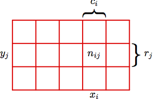

Dealing With Ignorance
Learning and Probabilistic Reasoning
Andrew M. Adare
January 26, 2016
When the facts change, I change my opinion.
What do you do, sir?
John Maynard Keynes
knowl·edge
- facts, information, and skills acquired by a person through experience or education; the theoretical or practical understanding of a subject.
- awareness or familiarity gained by experience of a fact or situation.
This talk is about the transition from belief to knowledge through evidence and probabilistic reasoning.
Bayesian Inference
Fascinating history:
Developed for apologetics; applied in war; suppressed and discredited for centuries; now rocking the mic
Essential features:
- Probability as subjective belief
- A priori information important--and explicit
- Model parameters as random variates
Contrast this with frequentist inference:
Frequentist statistics
Any experiment is viewed as one of an infinite sequence of similiar, independent experiments
Key technique: Method of Maximum Likelihood
Unknown parameters typically treated as fixed values; data points get error bars
Unnatural/problematic for rare events like earthquakes, stock market crashes
Probabilities: the big three
Consider this 2D histogram:
N is the sum of all cells
Joint $$ p(x_i, y_j) = \frac{n_{ij}}{N} $$
Marginal $$ p(x_i) = \frac{c_i}{N} $$
Conditional $$ p(y_j\,|\,x_i) = \frac{n_{ij}}{c_i} $$
Product rule of probability
Joint $$ p(x_i, y_j) = \frac{n_{ij}}{N} $$
Marginal $$ p(x_i) = \frac{c_i}{N} $$
Conditional $$ p(y_j\,|\,x_i) = \frac{n_{ij}}{c_i} $$
Combine:
$ p(x_i, y_j) = $ $ \frac{n_{ij}}{c_i}$ $\frac{c_i}{N} $
$ = $ $ p(y_j\,|\,x_i)$ $ p(x_i) $
Bayes' Rule
$$ p(x, y) = p(y\,|\,x)\,p(x) = p(x\,|\,y)\,p(y) $$
$$ p(y\,|\,x) = \frac{p(x\,|\,y)\,p(y)}{p(x)} $$
$$ \mathrm{posterior} = \frac{\mathrm{likelihood} \times \mathrm{prior}}{\mathrm{evidence}} $$
Statistical learning
Two goals, given a dataset $ \{ \mathbf{x}_{i} \}_{i=1}^N $
- Learn: find the unknown parameters $\mathbf{\theta}$ of a model by fitting to the data.
- Predict: calculate the probability of a new datum $\mathbf{x}^*$ under the model
Three general approaches
- Maximum Likelihood (ML) Estimation
- Maximum A Posteriori (MAP) estimation
- Fully Bayesian methods
Maximum Likelihood Estimation
Find the set of parameters under which the data are most likely: $$ \hat{\mathbf{\theta}} = \underset{\mathbf{\theta}}{\mathrm{argmax}} \left[ p(\mathbf{x}_{1\ldots I} \,|\, \mathbf{\theta}) \right] = \underset{\mathbf{\theta}}{\mathrm{argmax}} \left[ \prod_{i=1}^I p(\mathbf{x}_i \,|\, \mathbf{\theta}) \right] $$
Ordinary Least Squares works as an ML estimator for Gaussian likelihood (by minimizing $-\!\ln p(\mathbf{x} \,|\, \mathbf{\theta})$)
Maximum A Posteriori
MAP estimation uses Bayes' rule (without the denominator) $$ \hat{\mathbf{\theta}} = \underset{\mathbf{\theta}}{\mathrm{argmax}} \left[ p(\mathbf{\theta} \,|\, \mathbf{x}_{1\ldots I}) \right] = \underset{\mathbf{\theta}}{\mathrm{argmax}} \left[ \prod_{i=1}^I p(\mathbf{x}_i \,|\, \mathbf{\theta}) p(\mathbf{\theta}) \right] $$ This generalizes ML estimation by introducing prior knowledge/belief via $ p(\mathbf{\theta}) $.
Fully Bayesian Approach
Many choices of $\mathbf{\theta}$ may be consistent with the data.
Point estimates cannot accommodate that.
Fully Bayesian methods calculate the full joint posterior probability over the model parameters: $$ p(\mathbf{\theta} \,|\, \mathbf{x}_{1\ldots I}) = \frac{\prod_{i=1}^I p(\mathbf{x}_i \,|\, \mathbf{\theta}) p(\mathbf{\theta})} {p(\mathbf{x}_{1\ldots I})} $$
This is a distribution over possible models.
Predictive distributions
$p(\mathbf{x}^* \,|\, \mathbf{\theta})$ gives us a prediction for the unseen data $\mathbf{x}^*$ for a given $\mathbf{\theta}$.
Since there are many possible $\mathbf{\theta}$ values, we must integrate over them all, weighting by their probability: $$ p(\mathbf{x}^* \,|\, \mathbf{x}_{1\ldots I}) = \int p(\mathbf{x}^* \,|\, \mathbf{\theta}) \, p(\mathbf{\theta} \,|\, \mathbf{x}_{1\ldots I}) d\mathbf{\theta} $$
A unified picture: "posterior" from ML and MAP estimation is like a $\delta$-function at $\mathbf{\hat\theta}$.
So predicting $\mathbf{x}^*$ simply amounts to evaluating $p(\mathbf{x}^* \,|\, \mathbf{\hat\theta })$.
A minimal example: coin flipping
How do we test whether a coin is fair?
Use the binomial distribution to model the likelihood: $$ p(k\,|\, N, \theta) = \binom{N}{k} \theta^k (1-\theta)^{N-k} $$ $\theta$ controls the probability to obtain $k$ heads in $N$ flips.
The Beta-Binomial Model
Use a Beta distribution for the prior $p(\theta)$: $$ \mathrm{Beta}(\theta \,|\, a, b) \propto \theta^{a - 1}(1 - \theta)^{b - 1} $$
Conjugate prior to binomial likelihood
Uninformative if $a = b = 1$ (uniform distribution)
Posterior: $\mathrm{Beta}(\theta \,|\, N_h + a, N_t + b)$

Coin-Flip Simulation
Max. Likelihood vs Bayesian shootout
- Generate coin tosses using a fair coin ($\theta = 0.5$)
- Compute estimators for $\theta$ from the outcomes
We will compare $$\hat{\theta}_{MLE} = \frac{N_{h}}{N}$$
vs. the posterior mean $$E[\theta \,|\, \mathrm{outcomes}]$$
Observations
Both methods agree on the truth as $N \to \infty$
After two flips (both heads up), the MLE mean was $\frac{N_{h}}{N} = 1$ with a variance of zero!
Overfitting: that prediction wouldn't generalize.
But the Bayesian estimate is immediately closer to the correct answer, with a saner uncertainty
Posterior mean $ = \frac{N_{h} + a}{N + a + b} = \frac{3}{4} $ with a variance of $0.19^2$.
SLAM
Simultaneous Localization and Mapping
Start at unknown location in an unknown environment
Incrementally build a consistent map
Simultaneously determine location within map
Recursive state estimation
SLAM can be solved using an extended Kalman filter (EKF)
The EKF is a specialization of Bayesian filtering for linearized Gaussian models
Simulation: autonomous navigation using predefined waypoints, landmarks observed with a rangefinder, and Bayesian filtering

Summary
- Statistical learning involves initial beliefs, experience, and a conformant model
- Much like human learning!
- Machine learning is way too cool to be co-opted by marketers and advertisers
Extras
Gaussian models
The Gaussian is the highest-entropy distribution
Linear regression demo: a Bayesian rendition
Outline of demo, skipping many details:
- Synthetic data is generated from $f(x,\mathbf{a}) = a_0 + a_1 x$
- Goal: infer $a_0$ and $a_1$ from a fit to limited data
- Noise is added to $f(x_n)$ to give target values $t_n$
- Likelihood: $p(t|x,w,\beta) = \prod_n N(t_n|w^T \phi, 1/\beta)$
- Gaussian prior on $w_0$, $w_1$: $p(w|\alpha) = N(0, \Sigma)$, where $\Sigma = 1/\alpha \, I$
The posterior is thus also Gaussian: $p(w|t) = N(w|m_N, S_N)$, where $m_N = \beta S_N \Phi^T t$, and $S_N^{-1} = \alpha I + \beta \Phi^T \Phi$
Hidden function and prior